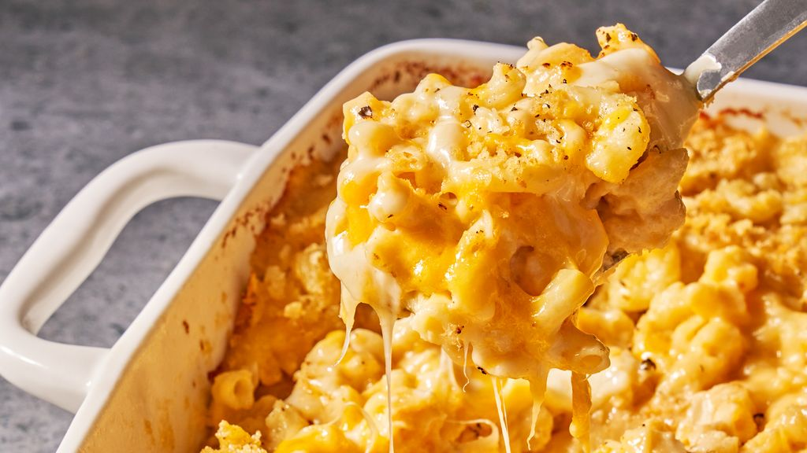

Mac and Cheese

During the end of the Great Depression, macaroni and cheese became a popular food item due to its low cost. It was billed as “the housewife's best friend, a nourishing one pot meal” and sold 8 million boxes when it was released by Kraft Foods in 1937. The popularity of the food then exploded once again in World War II.
Ingredients
- Macaroni
- Butter and Flour
- Milk
- Cheese
- Salt, Pepper and Paprika
- Bread Crumbs
Steps
- Boil the noodles, drain, and transfer to a prepared baking dish.
- Make the cheese sauce, pour the sauce over the noodles, and stir.
- Make the topping, spread it over macaroni and cheese, and sprinkle with paprika.
- Bake the mac and cheese until the topping is golden brown.